Do you prefer a video tutorial?
If you prefer a video:
Check out our official Youtube channel.
Or if you prefer good old text, keep reading.
In this tutorial, you will learn:
- How to start and stop JSCause.
- How to display basic web pages.
- How to display dynamic content.
- How to handle HTML forms and file uploads.
- How to do basic file system operations (read, move files.)
- How to handle URL query parameters.
This tutorial makes some assumptions:
-
That you have basic knowledge of the terminal (or command prompt/Powershell on Windows). Enough to navigate around directories (
cd) and invoke basic command-line instructions. -
That you have NodeJS installed in your system.
-
That NodeJS is at least version 8 (type
node --versionon the terminal if you want to double-check.) -
That you have downloaded the standalone version of JSCause. Or if you installed JSCause via
npm, then this tutorial assumes that you have downloaded the example site project. -
That your system has a modern web browser installed, such as Firefox, Safari, Edge or Chrome.
-
That you know how to view a web page’s HTML source code. You can try it now with this page! Need more info? Here it is: If you’re on Firefox and on Windows, try Control+U on the keyboard (Command+U on a Mac). If you’re on Chrome, try Control+Alt+U (or Command+Alt+U on a Mac.) On other browsers, look for a “View Source” or “View Page Source” on its menu. On Safari, it’s on the “Develop” menu, for example. The source code should look like something similar to the following:
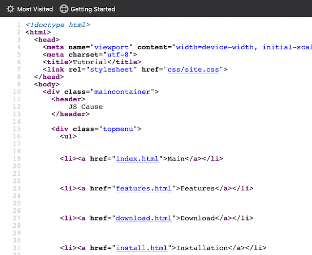 This website’s HTML source code
-
That you understand that this tutorial provides example source code for the sole purpose of teaching how JSCause works. We didn’t include security checks typically found in server-side code in order to keep the focus on JSCause’s features. JSCause performs a few security measures when running your code, but ultimately, you, the reader, are responsible to secure your own programs. This is not only true with JSCause, but with any other server-oriented technology that is exposed to an intranet or the Internet, and that handles sensitive information (such as user passwords, financial records, personal information, etc.)
-
That you are already familiarized with HTML, CSS and Javascript. You don’t have to be an expert, but at least you should know the basics.
-
And finally, that the results in this tutorial jusdt serve the purpose of demonstrating JSCause’s capabilities. Please don’t expect amazing design visuals in the results. For that, you’ll need to apply your HTML and CSS skills.
Let’s run JSCause
If you downloaded the stand-alone version, uncompress (unzip) it anywhere on your disk drive.
Or if you installed it via npm, uncompress (unzip) the example site project, again, anywhere on your disk drive.
No matter which way you used to get JSCause, the final uncompressed directory is named jscause. From a terminal window, go inside it:
pwd
[/some/path/in/your/system/jscause]
The contents of the jscause directory should have at least the following files and subdirectories:
Readme.txtjscause.conflogs/sites/
If you have the standalone version of JSCause, you’ll also have these files (don’t modify them if all you want is to run a website):
jscause.jsjscvendor/
Now run JSCause by typing:
node jscause
Or if you installed it via npm:
jscause
JSCause will start running and will present you with the following:
INFO: Reading configuration for site 'My Site' from 'sites/mysite'
INFO: Site 'My Site' at https://localhost:3000/ assigned to server 0
INFO: ************ All sites' configuration read at this point ********************
INFO: The following sites were set up successfully:
INFO: 'My Site'
INFO: Will start listening.
INFO: Server 0 listening on port 3000
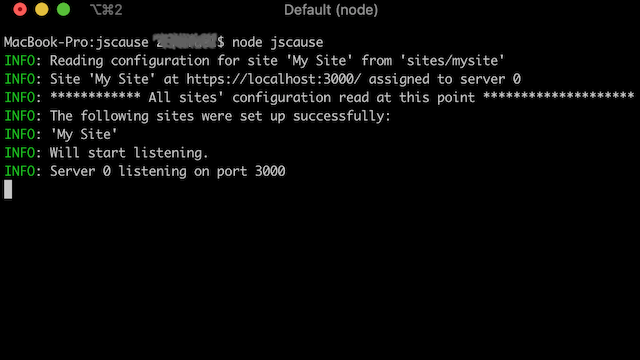 JSCause running
Great! At this point, JSCause is ready to receive requests. Go to your web browser and visit: https://localhost:3000
You may see a browser security warning, but since this is a tutorial, we can ignore it for now. Do not ignore it for production work! (see the Important notice further below.)
The browser will display the words “It works!”
In a modern browser, you’ll also see a row of rectangles slowly changing colors.
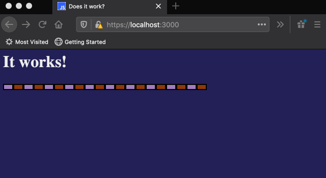 It works! JSCause is running!
Important: Your browser may warn you that the site is not secure. That’s because we’re using a placeholder SSL certificate in order to test and use HTTPS connections. These certificates are not suitable for production! If you use these certs, your users will get a security warning in their browsers. You must provide your valid private key file and certificate file. More information in the FAQ, and in the site configuration section in the documentation (specifically, the httpsCertFile and httpsKeyFile configuration attributes.)
Choose your own adventure
Do you want to dive into how JSCause builds and renders the “It Works!” page? Go to the next section, “Before exploring the example starter site,” and keep reading.
Or if you’d like to create a simple website from scratch, proceed to skip ahead and go to the “Let’s create a simple recipe uploader” section.
Before exploring the example starter site
Go ahead and refresh the starter site page a few times.
Notice three things:
1. Server-side rendering: Notice how the row colors change with each refresh. These colors are chosen on the server side. This is easy to check by viewing the page’s source code:
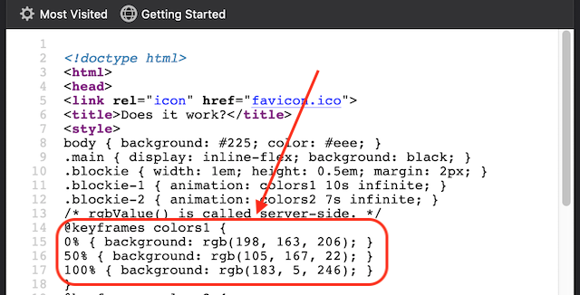 Part of the example site’s HTML source code
Notice the section about the CSS keyframes. Don’t worry if you don’t know much about CSS animations. Just pay attention to the numeric values inside rgb() (the values in your browser will very likely differ from this example):
@keyframes colors1 {
0% { background: rgb(198, 163, 206); }
50% { background: rgb(105, 167, 22); }
100% { background: rgb(183, 5, 246); }
}
If you refresh the page source code, you’ll get different numbers:
@keyframes colors1 {
0% { background: rgb(219, 57, 216); }
50% { background: rgb(91, 43, 167); }
100% { background: rgb(221, 76, 150); }
}
As you can see, those numbers are generated on the server.
2. Speed! Ok, we’ll admit that this page is a very simple one, so that’s a factor to take into consideration. But you get pure HTML and CSS here, and you get it fast (depending on your connection, of course.)
3. Logging: If you check the terminal window, you’ll notice a bunch of entries similar to the following ones:
Thu, 09 Jul 2020 04:40:28 GMT - localhost - GET: / - 200
Thu, 09 Jul 2020 04:40:28 GMT - localhost - GET: /favicon.ico - 200
Thu, 09 Jul 2020 04:43:07 GMT - localhost - GET: / - 200
Thu, 09 Jul 2020 04:43:08 GMT - localhost - GET: / - 200
Each entry represents one request coming from the web browser. In this case, we can see that JSCause at first served ‘/’, which stands for https://localhost:3000/, and ‘/favicon.ico’, which stands for https://localhost:3000/favicon.ico. Each duplicate ‘/’ corresponds to each time you refreshed the page. favicon.ico just got retrieved once, and the browser cached it (saved it), so it didn’t need to retrieve it again with each refresh. Notice that each entry has the date and time of the request, as well as whether it succeeded or not (200 = succeeded. Other typical HTTP status codes are 404 for “not found” and 500 for “application error.”)
A copy of these logs will be found in the /logs directory, as well as the sites/mywebsite/localLogs directory. Notice that JSCause compresses old log files to save up space.
Stopping JSCause
In order to stop JSCause, just hit Control+C on the terminal window. You’ll see the following:
^C
Received interrupt signal. Cleaning up before exiting...
Terminated.
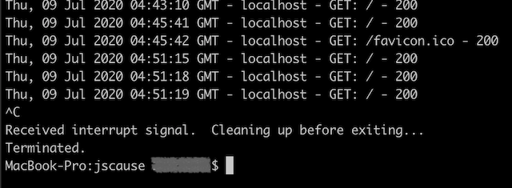 JSCause stopping
Very easy. Restart JSCause to continue with the tutorial.
Exploring the example starter site
If you explore the jscause directory (on Windows Explorer, Finder or the command line), you’ll notice a subsidrectory sites. Under sites, there will be one directory called mysite. Here’s its contents:
+ jscause.conf
+ sites/
+ mysite/
+ configuration/
+ localLogs/
+ workbench/
+ website/
index.jscp
favicon.ico
error4xx.jscp
error5xx.jscp
From the above diagram, we can observe that there is a jscause.conf file outside of sites/. We’ll delve into it for a bit on the second part of the tutorial, “Let’s create a simple recipe uploader.” For now, just ignore it. Anyway, moving on.
Notice how website has the files that comprise the actual website. When JSCause receives the https://localhost:3000/ request, it immediately assumes that we are referring to /index.jscp. index.jscp is the default file. That means, if you visit https://localhost:3000/index.jscp from the browser, you’ll get exactly the same page (with different row colors.)
Each JSCP file (files with the .jscp extension) represents one resource that is immediately available for requests from the browser (in web dev parlance, they directly map to the application’s server routes.) So, if you had a file named secondPage.jscp, then you could access it through:
https://localhost:3000/secondPage.jscp
The .jscp extension is optional, so this is also valid:
https://localhost:3000/secondPage
Or if you had a subdirectory and a file as /secondDir/index.jscp, then you could access it either through:
https://localhost:3000/secondDir/index.jscp
Or since we can omit the .jscp extension:
https://localhost:3000/secondDir/index
Or since index.jscp is the default:
https://localhost:3000/secondDir
Please note this exception: error4xx.jscp and error5xx.jscp are special files, so trying to request them directly (e.g. https://localhost:3000/err5xx.jscp) won’t work - JSCause will respond with an HTTP 404 error (not found) to the web browser. Please refer to the documentation for more information about these special error files.
Let’s move on.
We won’t discuss how the pure HTML and CSS do what they do in the browser. That can be an exercise for you (hint: CSS animations.) Instead, we’ll focus on the parts of index.jscp pertaining to JSCause.
There are three key parts:
Part 1: Lines 1-5:
<js
// These functions are defined server-side.
function randomNumber() { return Math.floor(Math.random() * 256); }
function rgbValue() { return `${randomNumber()}, ${randomNumber()}, ${randomNumber()}`; }
/js>
JSCause will run any code enclosed between <js and /js> before responding to the web browser.
That means that the code above will define two functions on the server, randomNumber() and rgbValue(). JSCause will never sent these function definitions to the web browser.
As you may have noticed, rgbValue() will create a string comprised of three random numbers between 0 and 255. For example: "141, 72, 260", or "34, 199, 102", or "255, 229, 7", etc.
“But wait,” you may be asking. “How do you send actual functions to the browser, then?” Don’t enclose those in a <js ... /js> block. If it’s a regular JS file (with a .js extension instead of .jscp, JSCause will send it as is. If the functions are inside a JSCP file , they should be inside <script> tags as it usually happens with Javascript embedded in HTML.
To illustrate the above: In the following example, serverFunction() is defined on the server-side, only to be used on the server, and clientFunction() will be sent to the browser, for the browser to define and use:
<js
function serverFunction() {
console.log('I run on the server.');
}
/js>
<script>
function clientFunction() {
console.log('I run on the client.');
}
</script>
Part 2: Lines 19-20:
@keyframes colors1 {
0% { background: rgb(<js= rgbValue() /js>); }
JSCause will treat everything outside of a <js ... /js> block as HTML/CSS content, and thus leave it alone. JSCause will send that HTML content as is when responding to the web browser. Well, at least that is true for the first line. Now, on the second line, we have:
<js= rgbValue() /js>
Remember that JSCause runs the contents of a <js ... /js> block. Notice how <js is followed by =. The = instructs JSCause to treat whatever follows as an expression. JSCause will evaluate that expression, convert it into a value, then use said value as part of the response to the web browser. Here is an example:
<p>Two plus two is: <js= 2+2 /js></p> <!-- The browser will show: Two plus two is 4 -->
<js const lastName = 'Anderson' /js> <!-- JSCause defines the lastName constant. -->
Hello, Mr. <js= lastName + '!' /js> <!-- The browser will show: Hello, Mr. Anderson! -->
Back to our starter site:
0% { background: rgb(<js= rgbValue() /js>); }
When JSCause sees rgbValue(), it will call it and use its value inside the block. Let’s suppose that rgbValue() returns the randomly created string "33, 44, 55". In that case, JSCause will send the following to the web browser:
0% { background: rgb(33, 44, 55); }
Part 3: Lines 35-38:
<js for (let i=0; i<10; i++) { /js>
<div class="blockie blockie-1"></div> <!-- i is <js= i /js> -->
<div class="blockie blockie-2"></div>
<js } /js>
Here we have a typical Javascript for loop. Notice again how the actual code is inside <js ... /js> blocks, and the rest is just HTML.
The for loop will output send the following to the web browser:
<div class="blockie blockie-1"></div> <!-- i is 0 -->
<div class="blockie blockie-2"></div>
<div class="blockie blockie-1"></div> <!-- i is 1 -->
<div class="blockie blockie-2"></div>
<div class="blockie blockie-1"></div> <!-- i is 2 -->
<div class="blockie blockie-2"></div>
<!-- ...etc... -->
<div class="blockie blockie-1"></div> <!-- i is 9 -->
<div class="blockie blockie-2"></div>
<div class="blockie blockie-1"></div> <!-- i is 10 -->
<div class="blockie blockie-2"></div>
And there you have it. That’s how JSCause renders the “It Works!” page.
If you want to learn about other features, such as how to handle request parameters, forms, and uploads, keep reading the sections below.
Or you can go directly to [the manual](/docs.html to learn about the whole feature set.
Let’s create a simple recipe uploader
In this exercise, we’ll create a food recipe uploader. It’s a very simple example. We won’t be using a database. Just file uploading, file creation, and that’s it.
We’ll start off with the example starter site that we set up and running in previous sections. Let’s take a look at its file structure again:
+ jscause.conf
+ sites/
+ mysite/
+ configuration/
+ localLogs/
+ workbench/
+ website/
index.jscp
favicon.ico
error4xx.jscp
error5xx.jscp
Changing the listening port
Just for the fun of it, let’s change the listening port from 3000 to 8080. So, instead of visiting https://localhost:3000, we’ll be visiting https://localhost:8080. In order to do that, open jscause.conf on a text editor. Here is its contents:
{
"sites": [
{
"name": "My Site",
"port": 3000,
"rootDirectoryName": "mysite",
"enableHTTPS": true
}
],
"logging": {
"general": {
"directoryName": "./logs",
"fileOutput": "enabled",
"consoleOutput": "enabled"
},
"perSite": {
"fileOutput": "per site",
"consoleOutput": "enabled"
}
}
}
Change the "port" configuration value from 3000 to 8080:
// Oh yes, comments starting with "//" are accepted.
{
"name": "My Site",
"port": 8080, // <--- changed from 3000 to 8080.
"rootDirectoryName": "mysite",
"enableHTTPS": true
}
Save the file, and restart JSCause: terminate it with Control+C then run node jscause (or jscause if you used npm.)
INFO: Reading configuration for site 'My Site' from 'sites/mysite'
INFO: Site 'My Site' at https://localhost:8080/ assigned to server 0
INFO: ************ All sites' configuration read at this point ********************
INFO: The following sites were set up successfully:
INFO: 'My Site'
INFO: Will start listening.
INFO: Server 0 listening on port 8080
Notice how JSCause just informed us that we’re now running from port 8080:
Go ahead and give it a try right now by visiting https://localhost:8080. Remember that you may get a security warning from your browser because we’re using HTTPS with placeholder certificates. Ignore the warning for now, but you must use your own valid certificates in production.
Creating new recipes subdirectories
Create a subdirectory named recipes under mysite, outside of website. Also, create a subdirectory named recipeImages under website.
Your directory structure should look like this:
+ sites/
+ mysite/
+ configuration/
+ localLogs/
+ workbench/
+ recipes/
+ website/
+ recipeImages/
Notice how recipes is outside of website. Because of that, we cannot access it from the web. This is exactly what we want for our purposes, since we’ll store some information we don’t want to make available in the raw. recipeImages, on the other hand, is available from the web.
Creating the No Frills Recipes homepage
Edit the file website/index.jscp, and replace its whole contents with the following:
<!doctype html>
<html>
<head>
<link rel="icon" href="favicon.ico">
<title>No frills recipes</title>
</head>
<body>
<h1>No frills recipes</h1>
<a href="/newRecipe.jscp">Create a new recipe</a>
</body>
</html>
It’s a very basic page showing a header and a link. Restart JSCause so it picks up the changes.
You’ll notice that JSCause throws an error. What happened? Here’s a condensed version of the error, showing the relevant bits:
ERROR: Site: Compile error: Unexpected token < at line 1
:1
[Some other error messages here]
SyntaxError: Unexpected token <
[Some stack trace errors here]
ERROR: Site: Could not compile code for index.jscp.
ERROR: Site 'My Site' not started.
INFO: ************ All sites' configuration read at this point ********************
ERROR: Server not started. No sites are running.
JSCause is telling us that it didn’t recognize the very first character in our file, the < in <!doctype html>.
This is because JSCause is expecting Javascript code. It’s a JSCP file after all. Since there are no <js ... /js> blocks anywhere on the page, it assumes that the whole file is Javascript. Of course, this is the wrong assumption since the whole file is HTML instead.
This is easily solved by adding the <html /> directive at the very top of the file:
<html />
<!doctype html>
<html>
<head>
<!-- etc, etc -->
<html /> tells JSCause that it should treat the whole file as HTML. This is fine for now since we’ll add some Javscript code later on. However, if you ever plan to serve HTML in a file, we suggest that you use the .html extension instead. That way, you don’t need to use the <html /> directive, plus JSCause will be more efficient (read: quicker) to deliver it to the web browser.
We are also aware that the error message is kind of cryptic. This will be improved in a future version.
Alright. Start JSCause again. This time it should work. Visit https://localhost:8080 (or refresh the web browser if it’s already open.)
You should see a very modest page showing a “No frills recipes” heading, and a “Create a new recipe” link:
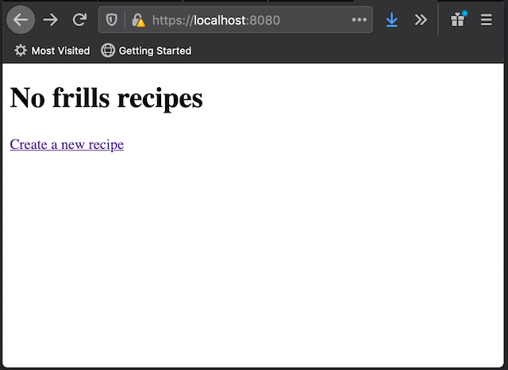 No Frills Recipes page
Creating a new page
Try to follow the “Create a new recipe” link. You will greeted with a “Not found” message:
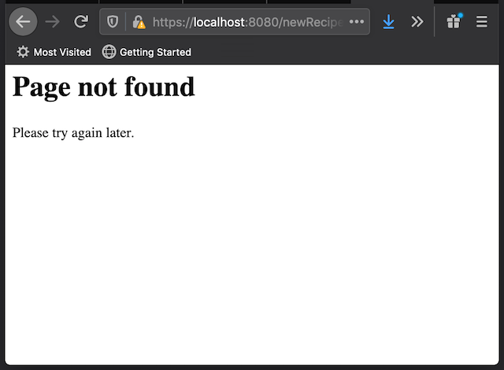 HTTP 404 Error: Not found
When we click on the link, JSCause sees a /newRecipe.jscp request, but no newRecipe.jsp file exists and, therefore, it responds with an HTTP 404 error. Let’s fix that.
Create a new newRecipe.jsp file alongside index.jscp:
+ sites/
+ mysite/
+ website/
+ index.jscp
+ newRecipe.jscp <--- new file
Fill it out with the following code:
<html />
<!doctype html>
<html>
<head>
<link rel="icon" href="favicon.ico">
<title>No frills recipes</title>
</head>
<body>
<h1>New no frills recipe</h1>
</body>
</html>
Restart JSCause and refresh the page. The browser will show the following:
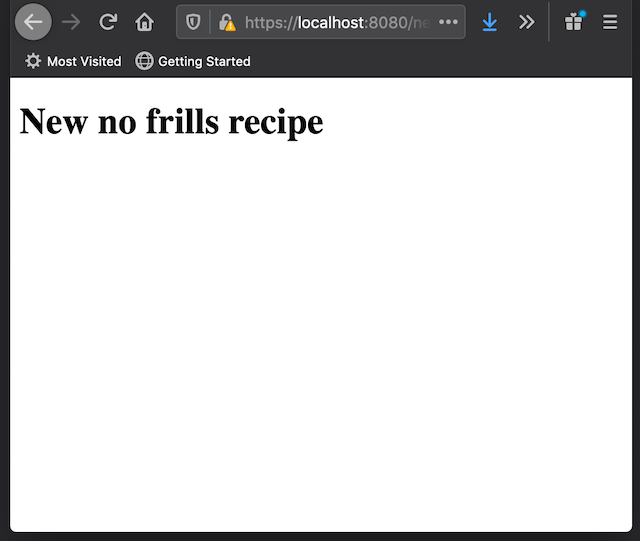 New Recipe page
Notice that JSCause treats URL paths as case-sensitive. That is, if you created a page called newPage.jscp, and try to visit https://localhost:8080/NEWPAGE.JSCP, or /newpage.jscp, /nEwPaGe.JsCp, etc, JSCause will respond that the page is not found. The URL must correctly match the JSCP file exactly as it is written, /newPage.jscp.
Adding a New Recipe form
Time to add the new recipe form. Right after the <h1>New no frills recipe</h1> heading, add the following:
<form method="post" action="newRecipe.jscp" enctype="multipart/form-data">
<p>Recipe title: <input type="text" name="recipe_title" value="" /></p>
<p>Recipe photo: <input type="file" name="recipe_photo" value="" /></p>
<p>Recipe description: <textarea name="recipe_description"></textarea></p>
<p><input type="submit" name="submit" value="Submit recipe" /></p>
</form>
As you can see, it’s just a standard HTML upload form. Restart JSCause and refresh the page in order to see it:
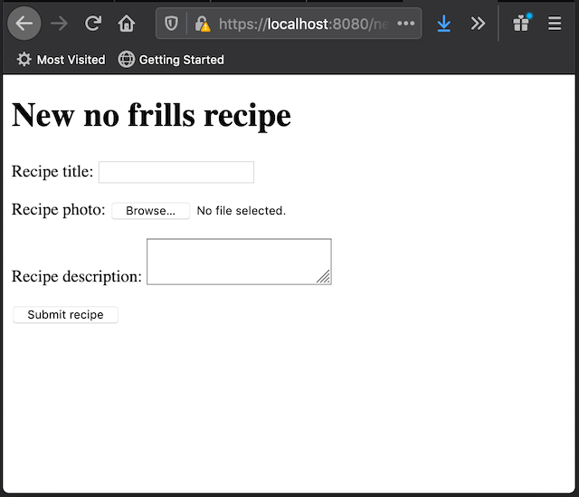 New Recipe form
Fill it out with some random data, then, click the “Submit recipe” button. You will notice that the page will refresh, and your entered form data gone. If you already have some experience with form handling, you may have an idea of what happened. If not, we’ll explain it now. So, what happened?
Accessing the form data, part 1
The form instructed the browser to submit the form to the newRecipe.jsp (indicated by the action="newRecipe.jsp" attribute.) JSCause runs newRecipe.jsp again and, given that it’s the same code as before, it responds in exactly the same way as before. Which is, it displays the form again:
New Recipe form after submission
In order to access the form query parameters, you can use the rt.postParams[] object. Each key in rt.postParams[] represents the name of a parameter. Each value, in turn, represents the value of the parameter.
Let’s say, for example, that you submitted “Tomato salad” as a recipe title in the form above.
We named the title field as "recipe_title" (name="recipe_title".) Therefore, rt.postParams['recipe_title'] will contain the string “Tomato salad”.
Let’s verify this by adding the following lines between the heading and the form:
<js
if (rt.postParams['submit']) {
rt.print('Submission received for: ' + rt.postParams['recipe_title']);
}
/js>
Restart JSCause and refresh the page. Your browser will ask you to confirm that you want to resubmit the form. Indicate that yes, you intend to resubmit. If you entered “Tomato salad” in the title, you’ll see the following:
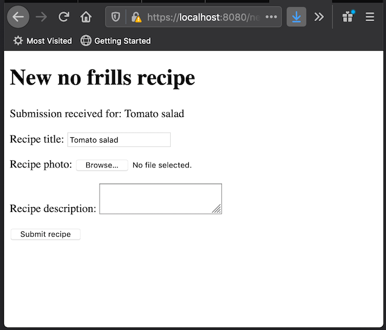 New Recipe title
The rt.print() command
Notice the rt.print() command, and how we can use it to print strings that will become part of the response. The following piece of code is equivalent:
<js if (rt.postParams['submit']) { /js>
Submission received for: <js= rt.postParams['recipe_title'] /js>
<js } /js>
Whether to use rt.print() or the <js= /js> block is a matter of preference.
Accessing the form data, part 2
Let’s validate the form data. Replace the whole if () {} block with the following:
if (rt.postParams['submit']) {
let proceed = true;
if (!rt.postParams['recipe_title']) {
rt.print(' - Please provide a title.');
proceed = false;
}
if (!rt.uploadedFiles['recipe_photo']) {
rt.print(' - Please provide a photo.');
proceed = false;
}
if (!rt.postParams['recipe_description']) {
rt.print(' - Please provide a recipe description.');
proceed = false;
}
if (proceed) {
rt.print('All form fields valid!');
}
}
Before continuing, notice how each key available in rt.postParams[] corresponds to a field in the form. Also notice that we used rt.uploadedFiles['recipe_photo'] to refer to the uploaded file. So, there you have it. Form field values are stored in rt.postParams[] and form file uploads are stored in rt.uploadedFiles[].
Restart JSCause and refresh the page. The browser will show the following:
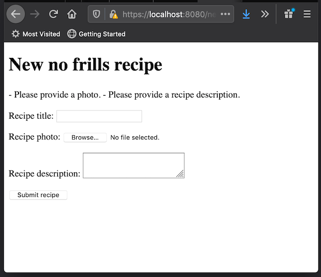 Browser validation
We had already provided a recipe title, but not a photo or description; hence we get those two messages in the response. Alright, let’s provide all the fields in the form. Re-add “Tomato soup” as a title, and click on the “Browse…” button next to the “Recipe photo” field in order to upload a photo. Any image file you have on your computer should work. If you don’t have any, you can download this one, courtesy of Wikipedia:
{kind=link}
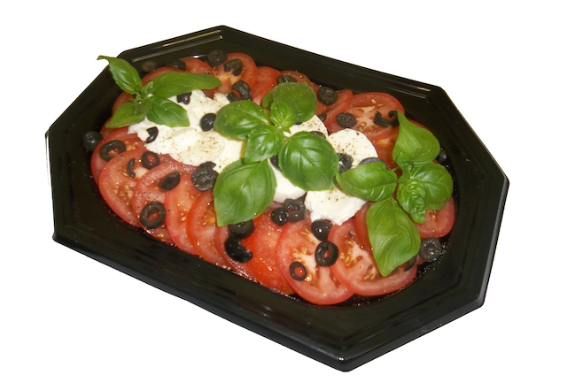 Mozzarella and Tomato Salad Platter
Finally, on the “Recipe description” field, add some text (for example, “This recipe will be available soon.”)
Click on the “Submit recipe” button.
The browser will now show the message “All form fields valid!”, indicating that the form data passed validation:
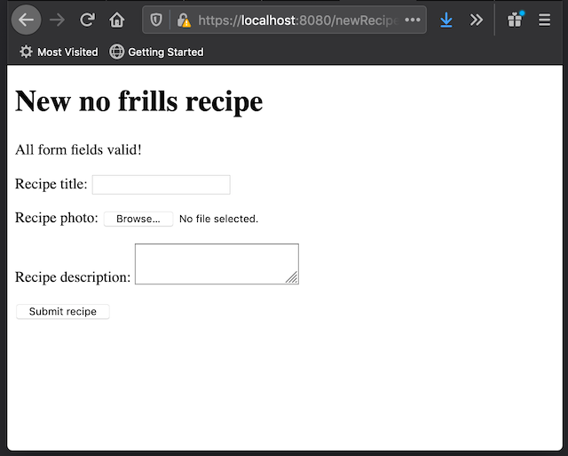 All form data is valid
Examining uploaded files
As mentioned earlier, rt.uploadedFiles[] has data associated to the files uploaded through the form. In the form, we have a file upload field named "recipe_photo". The file information is therefore available from rt.uploadedFiles['recipe_photo'].
In our example, the following is part of what rt.uploadedFiles['recipe_photo'] contains:
-
name(rt.uploadedFiles['recipe_photo'].name): The name of the uploaded file. -
path(rt.uploadedFiles['recipe_photo'].path): The path of the uploaded file, including a temporary name.
rt.uploadedFiles['recipe_photo'].name: If you used the suggested image above for our example, then this name would be tutorial_014_tomato_salad.png.
JSCause will replace invalid characters in name (e.g. <, >, and *) with an underscore, _. So if the original name is one*bad>name.txt, JSCause will change it to one_bad_name.txt before storing it in rt.uploadedFiles[].
rt.uploadedFiles['recipe_photo'].path: This a full file path pointing to where the upload has been temporarily stored.
We say temporarily stored because JSCause will delete it as soon as it finishes sending the response back to the web browser (which happens when the JSCP program ends.) This is by design in order to avoid clutter when an upload is not handled. So, in order to preserve the file, we must handle it.
Before handling the file, here are two more things to keep in mind:
-
The full path typically points to a location within the site’s subdirectory. In this example, it will be
sites/website/workbench. -
The name specified in
pathwill most likely not match the file name specified inname. In our example,namewill be something liketutorial_014_tomato_salad.png, whereaspathwill contain a random name similar tojscupload_2a5957...f7227d. This is for security purposes. Don’t pay too much attention to that random name. It’s just temporary, after all.
Handling and storing uploaded files
Let’s move the uploaded photo a permanent location. We could copy it as well, but moving it is way faster. JSCause is prepared to deal with either case.
Replace the if (proceed) statement with the following:
if (proceed) {
const photoFile = rt.uploadedFiles['recipe_photo'];
const fileName = photoFile.name;
const moveFrom = photoFile.path;
const moveTo = `website/recipeImages/${fileName}`;
rt.moveFile(moveFrom, moveTo);
rt.print('Recipe photo uploaded successfully!');
}
Quick note: if you’re on Windows, you may want to set moveTo to website\\recipeImages\\${fileName} instead. You can use the join() method of the path NodeJS module is you’d like make them platform independent. We’ll provide an example later.
On to the code…
The key operation here is done by rt.moveFile(). As its name implies, rt.moveFile() moves a file from one file location to another.
From the above code, moveFrom contains the temporary path of the uploaded photo. moveTo contains the destination path, which is the recipeImages subdirectory. We have left the original file name provided by the web browser (although JSCause can tweak it for security purposes.)
Let’s talk more about the way the code provides the destination path:
`website/recipeImages/${fileName}`
Which JSCause converts to website/recipeImages/tutorial_014_tomato_salad.png (or whatever file name you used.)
The above path will always be relative to your website’s working directory - no matter where your JSCP file is located (e.g. be it in ./myPage.jscp or /someDir/anotherDir/myPage.jscp.)
So, if the website is located, say, at /Users/Lana/Web/jscause/sites/mysite, then JSCause sees:
website/recipeImages/tutorial_014_tomato_salad.png
as:
/Users/Lana/Web/jscause/sites/mysite/website/recipeImages/tutorial_014_tomato_salad.png
Because recipeImages is inside of website, then it will be available to the public. If you don’t want make it immediately available (and that’s generally the case with many files), move it to a location outside of website. Please read the paragraph marked as IMPORTANT at the end of this section for more information.
You can also provide a relative path for the source (“from”) path to rt.moveFile(). And you can also explicitly provide an absolute path as well (for both source and destination.) As the matter of fact, we are already doing with that with the source, since it moveFrom, which contains the same value as rt.uploadedFiles['recipe_photo'], is provided as an absolute path.
As noted earlier, NodeJS (not JSCause) provides the join() method from the path module as a way to build paths without us worrying about running on Windows, Linux, macOS, etc. Let’s use it.
At the very top of the file, replace:
<html />
With:
<js
const fsPath = require('path');
/js>
Then, replace:
const moveTo = `website/recipeImages/${fileName}`;
With:
const moveTo = fsPath.join('website', 'recipeImages', fileName);
IMPORTANT: As a rule of thumb, you should never trust content uploaded from an external source like a web client (such as a web browser.) Take all the necessary measures to ensure that neither your system, nor your visitors, are negatively affected by content provided by third parties. JSCause attempts to mitigate this, for example, by not allowing the copying or moving of either JSCP or JSCM files into website (at least, not by default.) But you can and should do more security checks in order to protect yourself.
Checking for upload errors
What if the file upload doesn’t go through? Let’s simulate that by temporarily making the destination path invalid. That will cause an error, and the file move operation will fail. In the moveTo line:
const moveTo = require('path').join('website', 'recipeImages', fileName);
Replace 'website' with 'website_INVALID' (let’s hope you don’t have an existing website_INVALID directory? If that’s the case, then use another name, like 'website_INVALID2'):
const moveTo = require('path').join('website_INVALID', 'recipeImages', fileName);
Restart JSCause and refresh the page. The browser will show an error page:
HTTP 500 Error: Internal server error
If you check the terminal where JSCause is running, you’ll a message like the following:
ERROR: Site: My Site: Runtime error on file /newRecipe.jscp:
ENOENT: no such file or directory,
rename '/[some path]/jscause/sites/mysite/workbench/jscupload_6fbdadb42a2a297c44f7abe27bc32962' ->
'[some path]/jscause/sites/mysite/website_INVALID/recipeImages/tutorial_014_tomato_salad.png'
at line (unknown)
[... More error info here ... ]
Sun, 12 Jul 2020 17:05:22 GMT - localhost - POST: /newRecipe.jscp - 500
Notice how the last line indicates that JSCause responded with an HTTP 500 Error back to the web browser.
Good to know that JSCause reports an error, but the message is not helpful to the site’s visitors. Let’s show the visitors a more friendly error message alongside with the form.
Replace:
rt.moveFile(moveFrom, moveTo);
With:
rt.moveFile(moveFrom, moveTo)
.rtOnError((err) => { rt.print('There was an error. Please try again later.'); });
From the above, you can see that rt.moveFile() can be chained with .rtOnerror() in order to handle any errors that the move operation may raise (or throw, if you prefer.) .rtOnError() expects a callback function.
Restart JSCause and refresh the page. The browser will show your error page:
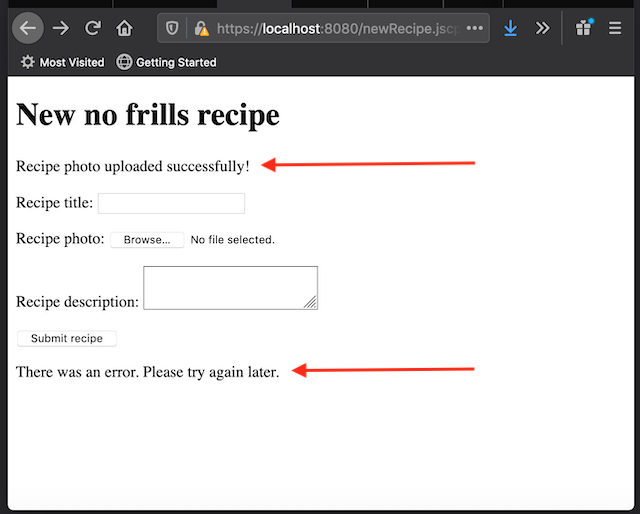 Error message in the form
Our custom error message is displayed now. However, check out those issues with red arrows above.
First, the success message is still displayed. And second, our error message appears at the bottom of the form instead of at the top.
Let’s address the first issue.
But before continuing: Notice how the error handling callback has an err parameter. This parameter contains what JSCause got from the underlying operating system. It’s not advisable to print this error to the page, but you may want to output it to the terminal via console.error() (i.i. console.error(err)). That way, your site visitors won’t see the actual error (which can be a security issue), but you as a developer will still have access to it (via the terminal, and logs that your operating system captures via console.error().)
Checking for upload success
Just like we have .rtOnError(), we also have .rtOnSuccess(), and it does exactly what you’re thinking: It will invoke a callback function when rt.moveFile() suceeds.
Thereby, we can move our original rt.print() success statement into an rt.OnSuccess() callback function.
Right after:
rt.moveFile(moveFrom, moveTo)
Insert a new line:
.rtOnSuccess(() => { rt.print('Recipe photo uploaded successfully!'); })
So the whole rt.moveFile() operation will look like this:
rt.moveFile(moveFrom, moveTo)
.rtOnSuccess(() => { rt.print('Recipe photo uploaded successfully!'); })
.rtOnError((err) => { rt.print('There was an error. Please try again later.'); });
At this point, you can comment out or delete the original rt.print() success statement. The whole upload handling block will look like the following:
if (proceed) {
const photoFile = rt.uploadedFiles['recipe_photo'];
const moveFrom = photoFile.path;
const fileName = photoFile.name;
const moveTo = require('path').join('website_INVALID', 'recipeImages', fileName);
rt.moveFile(moveFrom, moveTo)
.rtOnSuccess(() => { rt.print('Recipe photo uploaded successfully!'); })
.rtOnError((err) => { rt.print('There was an error. Please try again later.'); });
}
Restart JSCause and refresh the browser. The page will now show the following:
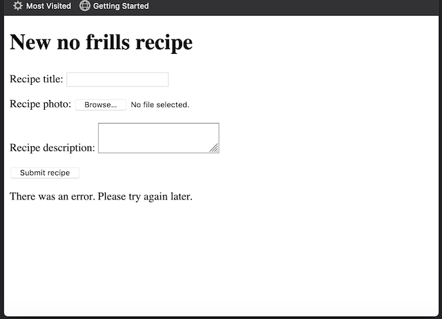 Error message in the form
The success message is gone now. Remember that the file move operation fails because we deliberately made it fail by rewriting the 'website' string in the path building operation to 'website_INVALID'.
If we fix the path, the success message will appear again. However, if we did this now, you would notice that it would also appear at the bottom of the form. So, before doing that, let’s make the result messages (successful or not) appear at the top again.
Dealing with asynchronous calls
Note: If you’re familiar with how Javascript handles asynchronous operations, then you may skip the next four paragraph of our subsection, “Asynchronous operations explained quickly.”
Asynchronous operations explained quickly:
rt.moveFile() is an asynchronous operation. That is, when JSCause get to an rt.moveFile() command, it starts the process of moving the file, but it doesn’t wait for it to finish. Instead, it leaves the task in the background and moves on to the next statement in the JSCP file. At some point, when the move operation completes, JSCause runs the appropiate callback function depending on the result (i.e., the callback in either .rtOnSuccess() or .rtOnError().)
In our example, JSCause starts the move operation, then proceeds to render the New Recipe form. When the move operation completes, JSCause will either render a success message, or an error one. Since it has already rendered the form, then the message will appear after it.
Why does JSCause not just wait until the move operation is completed? Because file operations are way slower than typical in-memory operations (yes, even today.) If JSCause has to render hundreds or thousands of pages per second due to many requests, all those disk operations add up, and visitors will experience a slow website. The solution is asynchronous operations.
If JSCause can do some other tasks without waiting for disk operations to complete, then the wait times for each visitor are greatly reduced. Think of a big customer queue at the supermarket. If there is only one cashier in the whole store, everybody has to wait for each and every customer transaction ahead of them. Asynchronous operations are like having several cashiers helping that one single queue. It doesn’t matter if one customer is too slow. As soon as another cashier is free, the next customer can be helped.
End of quickly explaining asynchronous operations.
We’ll have to render the form after the asynchronous operations complete:
-
After the uploaded file move operation completes, and
-
After the result callback (
.rtonSucess()/.rtOnError()) completes as well.
We can do that with rt.runAfter(). This command accepts a callback (yes, another one), and it will only run it when all other pending (asynchronous) operations in your JSCP file have completed. This will be true no matter if there is one, five, 10 or 99 pending operations. In our example, we only have one.
Here a quick example:
rt.runAfter(() => {
console.log('We have completed all our operations.');
})
Now let’s go back to our recipe upload example.
Replace:
<form method="post" action="newRecipe.jscp" enctype="multipart/form-data">
<p>Recipe title: <input type="text" name="recipe_title" value="" /></p>
<p>Recipe photo: <input type="file" name="recipe_photo" value="" /></p>
<p>Recipe description: <textarea name="recipe_description"></textarea></p>
<p><input type="submit" name="submit" value="Submit recipe" /></p>
</form>
With:
<js rt.runAfter(() => { /js>
<form method="post" action="newRecipe.jscp" enctype="multipart/form-data">
<p>Recipe title: <input type="text" name="recipe_title" value="" /></p>
<p>Recipe photo: <input type="file" name="recipe_photo" value="" /></p>
<p>Recipe description: <textarea name="recipe_description"></textarea></p>
<p><input type="submit" name="submit" value="Submit recipe" /></p>
</form>
<js }); /js>
You will notice that the code now has two continuous <js ... /js> blocks. Combining them into one would be completely fine. We just separated both blocks for illustration purposes, just to emphasize that the second block runs last.
Restart JSCause and refresh the browser. Now you should be seeing the error message on top of the form:
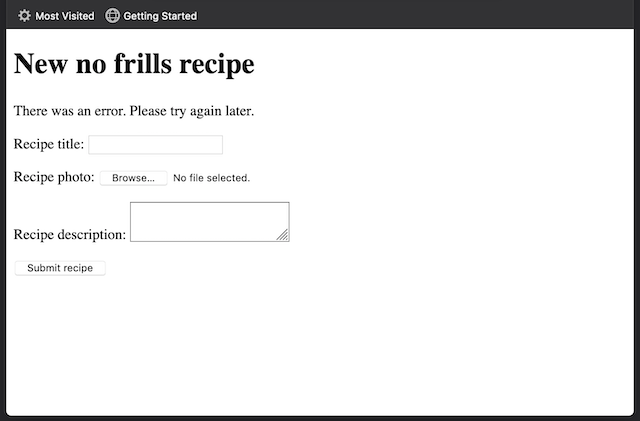 Error message in the form
Now, let’s fix the destination path. Rememeber we deliberately made it invalid:
const moveTo = require('path').join('website_INVALID', 'recipeImages', fileName);
Remove that _INVALID suffix:
const moveTo = require('path').join('website', 'recipeImages', fileName);
Restart JSCause and refresh the browser. Now the operation succeeds, and the success message appears on top of the form:
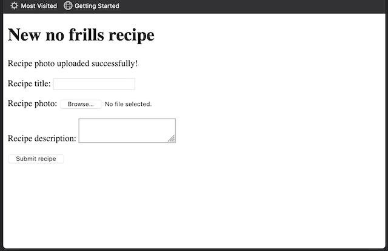 Upload successful
Let’s check that the recipe photo was indeed uploaded. Examine the sites/mysite/website/recipeImages subdirectory (by using macOS’s Finder, Windows Explorer, or Linux equivalent; or the from terminal with the ls or dir command.)
$ ls sites/mysite/website/recipeImages/
tutorial_014_tomato_salad.png
If you see the tutorial_014_tomato_salad.png file in the list, then everything worked correctly!
A quick note about moving a file to a destination that already exists: if we instruct rt.moveFile() to move a file, and another file already exists at the destination, then that file will be overwritten. This is the default behavior. You can change this so that JSCause emits an error without overwriting anything, by adding a third boolean parameter set to false. For example, rt.moveFile('source_path', 'dest_path', false);. You should handle that error with rt.onError() if you don’t want your visitors to see an HTTP 500 error (internal server error) in their browsers.
Alright, we’ve uploaded the recipe photo. We should move on to storing the actual recipe.
The recipe contents and its location
Let’s revisit part of our application’s file structure in order to highlight where the recipes directory is located:
+ sites/
+ mysite/
+ recipes/
+ website/
+ recipeImages/
+ index.jscp
+ newRecipe.jscp
recipes is outside of website, which means, JSCause won’t be able to serve it to a web client. This is by design. We can hold data and other assets in a way that’s not accessible to the public, by simply keeping it off the website directory.
We want the recipes to be accessible in our application, sure. Just not the raw data.
Let’s also revisit what’s left to be addressed in the form:
<p>Recipe title: <input type="text" name="recipe_title" value="" /></p>
<p>Recipe description: <textarea name="recipe_description"></textarea></p>
</form>
We’ll store the contents of the recipe_title and the recipe_description parameters in a text file, and we’ll place that text file in recipes. To keep things simple, we’ll name that file with the name of its corresponding recipe image. For example, if we uploaded a recipe image named tutorial_014_tomato_salad.png, our recipe file will be called tutorial_014_tomato_salad.txt.
Alright, let’s do that.
Creating new recipe files
We’ll need to create a file by using Node’s fs module. Right after the require() at the beginning of the file:
const fsPath = require('path');
Add:
const fs = require('fs');
And right after this move operation:
rt.moveFile(moveFrom, moveTo)
.rtOnSuccess(() => { rt.print('Recipe photo uploaded successfully!'); })
.rtOnError((err) => { rt.print('There was an error. Please try again later.'); });
Add the following:
const fileNameWithNoExtension = fileName.replace(/(.+)\..*$/, '$1');
const newRecipeFile = fsPath.join('sites', 'mysite', 'recipes', `${fileNameWithNoExtension}.txt`);
const recipeFileContents = `${rt.postParams['recipe_title']}\n${rt.postParams['recipe_description']}`;
fs.writeFile(newRecipeFile, recipeFileContents, (err) => {
if (err) {
rt.print('There was an error while adding the recipe.');
return;
}
/js>
<div>Recipe added successfully!</div>
<a href="/">Go back to the home page</a>
<js
});
We first take the recipe image’s file name and strip the extension off it. Then we create a path to recipes using the same file name, but with a .txt extension. So, if we initially have tutorial_014_tomato_salad.png, then newRecipeFile will be recipes/tutorial_014_tomato_salad.txt.
The following line assigns the recipe’s title and description, which were taken from the submitted form via POST, to the recipeFileContents constant.
And finally, we do the writing of the content of recipeFileContents to recipes/tutorial_014_tomato_salad.txt.
We pass a callback to Node’s fs.writeFile() function in order to examine the result of the write operation. If err is set, the program will inform the visitor that there was an error. Otherwise, it will show that the recipe was successfully added, plus a link to go back to the home page. Or at least, that’s what we expect, but it’s not what happens.
Restart JSCause and refresh the browser page:
Image uploaded. What about the recipe?
We get the same message as before, but where is the new message about the recipe added successfully? Was the recipe created at all?
Correctly announcing when the recipe is created
If you examine the recipes directory, you’ll notice that the recipe text file was indeed created:
+ sites/
+ mysite/
+ recipes/
+ tutorial_014_tomato_salad.txt
The operation succeeds, but what happened to the callback? Why is there no “Recipe added successfully!” displayed on the page?
Since we’re using a NodeJS file operation command, fs.writeFile() and not a built-in JSCause one, then JSCause does not wait for the callback to be invoked and completed. It sends the response back to the web browser without taking the callback into account.
That last sentence means that the callback does eventually get invoked. But by the time it does, JSCause has already moved on. Anything printed with rt.print() within that old-news callback will simply be discarded.
In order to address this, we’ll have to instruct JSCause to wait, just like it does with its own built-in commands (e.g. rt.moveFile().) We’ll use the rt.waitFor() command for that.
rt.waitFor() takes the place of the callback, and takes said callback as its parameter (e.g. rt.waitFor([callback here]).)
For example, the following piece of code:
fs.writeFile(
filePath,
contents,
() => { console.log('Invoked!'); }
);
Must be modified as follows:
fs.writeFile(
filePath,
contents,
rt.waitFor(() => { console.log('Invoked!'); })
);
rt.waitFor() instructs JSCause to wait for the callback to be invoked and to complete before it sends a response back to the web browser.
Back to our recipe’s example, modify the code so that the callback is a parameter for rt.waitFor():
fs.writeFile(newRecipeFile, recipeFileContents, rt.waitFor((err) => {
if (err) {
rt.print('There was an error while adding the recipe.');
return;
}
/js>
<div>Recipe added successfully!</div>
<a href="/">Go back to the home page</a>
<js
}));
Restart JSCause and refresh the browser.
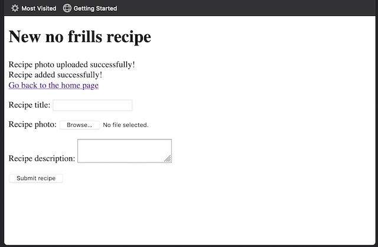 Image uploaded, and recipe added
Great! Now the message appears as expected.
You may be wondering, what’s the reason behind built-in JSCause commands, such as rt.moveFile(), not requiring the use rt.waitFor()? The answer is, they do require it, but they automatically provide it for us.
Also, why should we use rt.moveFile() when fs.move() exists? In the end, the you can, and should, use the tool that is best for the job. One main difference is that fs.move(), and many other NodeJS commands that deal with file system operations, treat relative paths as relative to the location of the jscause.js executable, whereas in JSCause commands, the path is generally relative to the site’s directory .
To illustrate the above, let’s take a look at our project file layout (we are assuming that you installed the stand-alone version):
- jscause.js
- jscause.conf
- sites/ + mysite/ + website/
When calling rt.movFile('from_some_path', 'recipes'), JSCause assumes that recipes is located as it appears here:
- jscause.js
- jscause.conf
- sites/ + mysite/ + recipes <—– Assumed by rt.moveFile() + website/
In turn, when calling fs.move('from_some_path', 'recipes'), JSCause assumes that recipes is in a different location:
- jscause.js
- jscause.conf
- recipes <—– Assumed by fs.move()
- sites/ + mysite/ + website/
You may say that JSCause built-in commands are “more local” than NodeJS ones. In a future version, we’ll provide a way to guarantee that NodeJS commands refer to the same location as JSCause ones.
A word about security! Remember that fileNameWithNoExtension was derived from a value taken from postParams[], and that value came from outside (that is, from the wild, wild Internet!) For simplicity, we are writing code that just shows JSCause’s features. But you should always treat values that come from a visitor as potentially dangerous. For instance, what if the name contained ..? Could your application write to files that are outside of JSCause’s directory? Would it contain characters that would make the application crash? Treat the security of your application seriously, so that you don’t get unpleasant surprises caused by external parties down the road.
Important! Always use rt.waitFor() with callbacks (unless you’re using them with rt methods, as mentioned above.) If you don’t, then make sure you catch all the potential errors with try / catch blocks. Otherwise, if an error occurs the whole JSCause application will crash, and your website will become unavailable. You will need to manually restart it (or implement an external automatic system that does this for you.)
Alright, back to the recipe uploading and creating operations.
Here is an exercise for you:
Uploading the image and creating the file are two independent operations. Ideally, if the recipe image uploading throws an error, the operation to create the actual recipe shouldn’t happen. Or if writing the recipe text fails, then the uploaded image should be deleted. How can you achieve this? Here are hints for two potential approaches:
- Approach No. 1: The second operation should be inside of an
.rtOnSuccess()handler. - Approach No. 2: Use an extra
rt.runAfter(). Yup, there can be more than one, and they form a queue when this happens!
Preparing the home page to list existing recipes
Now that we can upload recipes, let’s list them.
This is how we’ll achieve this:
The first task is, we’ll read all the names of the files found inside the recipeImages directory. Then, we’ll strip them off their file extensions, so we can derive the associated text file name with the recipe contents. For example, if we find tutorial_014_tomato_salad.png, then we derive tutorial_014_tomato_salad.txt from it.
Side note: You may think that we could do it the other way around: that is, read the recipes directory, then derive the recipes’ images off the text files. The issue with this is, different recipes may have images with different file extensions (e.g. png, jpg, bmp, etc.), so the derivation task is harder. In turn, deriving the recipe text file is straightforward since every file ends in .txt.
Once we complete this recipe retrieving task, the move on to the second task which is, we’ll render the list in HTML.
Because the first task involves file operations, we know that we’ll use callbacks, and that we’ll have to wait for them to complete before rendering the list.
Typically, one could render the initial part of the HTML, then render the rest when the last task completes. To keep things simple, we’ll wait for all the tasks to complete, then we’ll render all the HTML.
We can achieve that with rt.runAfter(). Let’s take another look at the contents of index.jscp before modifying it:
<!doctype html>
<html>
<head>
<link rel="icon" href="favicon.ico">
<title>No frills recipes</title>
</head>
<body>
<h1>No frills recipes</h1>
<a href="/newRecipe.jscp">Create a new recipe</a>
</body>
</html>
Remove the <html /> located at the very beginning of the file, and replace it with the following:
<js rt.runAfter(() => { /js>
And after the last line, add the following:
<js }); /js>
Restart JSCause and visit https://localhost:8080. You’ll notice that the page will render unchanged. We told JSCause to wait for all pending operations to complete before rendering the HTML, but since there are no pending operations at all, JSCause just goes ahead and renders the HTML.
On to reading all the recipes.
Retrieving existing recipes
Add the following at the beginning of the file:
<js
const fsPath = require('path');
const fs = require('fs');
const recipesList = [];
const imagesPath = fsPath.join('sites', 'mysite', 'website', 'recipeImages');
/js>
We’re importing the NodeJS path module in order to construct the path to recipeImages, and assign it to imagesPath. As shown above, this path is sites/mysite/website/recipeImages (why aren’t paths relative to mysite? Remember that only the built-in JSCause commands such as rt.readFile() are relative to mysite, whereas regular NodeJS commands assume that paths are relative to where the jscause.js is located at.)
We’ll use the fs module to read the contents of recipeImages, that is, its list of files (more accurately, just the file names.)
recipesList is an array that will contain all the recipes’ information required to build the HTML list. It’s empty for now.
Let’s read the directory. Right after:
const imagesPath = fsPath.join('sites', 'mysite', 'website', 'recipeImages');
Add the following:
fs.readdir(imagesPath, rt.waitFor((err, files) => {
files.forEach((fileName) => {
// We'll do something with each fileName here.
});
});
From the above, we are reading all the file names inside recipeImages, then we loop through each one. The loop doesn’t do anything just yet. Let’s change that.
Replace the commented line:
// We'll do something with each fileName here.
With:
const [ _ignored, fileNameWithNoExtension, fileExtension ] = fileName.match(/(.+)\.(.*)$/) || [];
const fileNameWithTextExtension = `${fileNameWithNoExtension}.txt`;
const textPath = fsPath.join('recipes', fileNameWithTextExtension);
rt.readFile(textPath)
.rtOnSuccess((contents) => {})
.rtOnError((err) => {});
We first take the file name and extract its name and extension by using a regular expression. There are probably other ways to do this that are better, but this one works for our purposes. With just the name, we build textPath, which points to the actual recipe’s text file.
Then we read the file. Notice how we have already included the handler callbacks for both when the operation succeeds and when the operation fails. They don’t do anything just yet, so let’s fix that.
Let’s start with .rtOnError(). You may be wondering, “why would the read operation fail, if we added the recipes ourselves?” Well, this is just a safeguard in case something happened to the file between the moment we created it, and the moment we read it (e.g. disk failures.) Plus there may be other files that the Operating System may have placed in recipeImages in there as part of its normal operations. For those files, there is no associated text files, so the read operation will fail. .rtOnError() will handle that.
Replace:
.rtOnError((err) => {});
With:
.rtOnError((err) => {
console.warn(`Warning: an error occurred while reading the contents of ${fileNameWithTextExtension}:`);
console.warn(err);
});
We are just displaying a warning to the terminal. Usually, you may want to log this error event to a file or similar operation. JScause does not have the mechanisms to do this for the developer just yet, but you could come up with your own. For now, displaying a warning is enough. This way, JSCause won’t halt our program and show an HTTP Error 500 (internal server error) to the visitor.
Why don’t you try it now? Restart JSCause, refresh the page, then examine the terminal. If there are no errors displayed, good. If there are errors, and the program is still running, then good too! Aren’t we glad we handled this kind of errors?
Time to handle the actual file reading.
Replace:
.rtOnSuccess((contents) => {})
With:
.rtOnSuccess((contentsBuffer) => {
const textContents = contentsBuffer.toString();
const recipeArray = textContents.split(/\n/);
const recipeTitle = recipeArray[0];
recipesList.push({ title: recipeTitle, name: fileNameWithNoExtension, extension: fileExtension });
})
From the above, we get the contents of the file as a file buffer in contentsBuffer. We convert it to a string, then process it. We know that the very first line in the contents represents the title of the recipe, so we extract it. Once we do that, we add our recipe info to recipeList, namely, the title, the file name, and the recipe image file’s extension. Why this information?
We the recipe’s title, name and image’s file extension will help us build the list that we’ll show to the visitors in their web browsers. Both the file name and extension are the way we’ll refer to this recipe later when displaying it (that is, when a visitor clicks on it.) But we’ll deal with displaying the actual recipe later.
Let’s create the actual list now.
Listing existing recipes
Let’s go through recipesList. Right after this line:
<a href="/newRecipe.jscp">Create a new recipe</a>
Insert the following:
<ul>
<js recipesList.forEach((recipe) => { /js>
<li><a href="viewRecipe.jscp"><js= recipe.title /js></a></li>
<js }); /js>
</ul>
Restart JSCause and refresh the page. The above creates an unordered HTML list of all the recipe titles.
You should now see a list of recipes. In our example, there is only one:
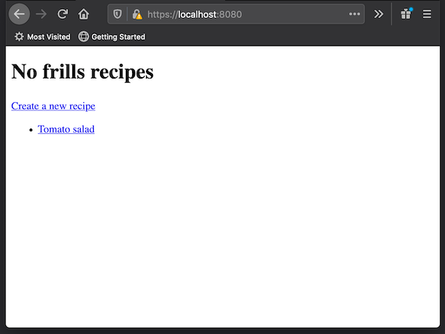 A list of one recipe
Our work is not complete, though. First of all, if we had more than one recipe, then each one would have the same link (viewRecipe.jsp). Let’s pass the recipe’s text file name (without the .txt) as a URL parameter. Let’s include the image’s extension as well since the recipe viewer will need it to retrieve the image later.
Right after viewRecipe.jscp, insert the following: ?name=<js= recipe.name /js>&extension=<js= recipe.extension /js>, so the line looks like this:
<li><a href="viewRecipe.jscp?name=<js= recipe.name /js>&extension=<js= recipe.extension /js>"><js= recipe.title /js></a></li>
Restart JSCause and refresh the page. Click on the recipe entry on the list. The browser will display a “Page not found” error. That’s fine for now. However, check out the address bar. It should read https://localhost:8080/viewRecipe.jscp?name=tutorial_014_tomato_salad&extension=png.
Alright, the browser can’t find viewRecipe.jscp because we haven’t created it yet. Let’s do that.
Preparing to display a recipe
Create a new viewRecipe.jsp file alongside index.jscp and newRecipe.jscp:
+ sites/
+ mysite/
+ website/
+ index.jscp
+ newRecipe.jscp
+ viewRecipe.jscp <--- new file
Fill it out with the following code:
<js
const fsPath = require('path');
/js>
<js rt.runAfter(() => { /js>
<!doctype html>
<html>
<head>
<link rel="icon" href="favicon.ico">
<title>No frills recipes</title>
</head>
<body>
<h1>No frills recipes</h1>
</body>
</html>
<js }); /js>
We have an already familiar starting point: Two <js /js> blocks, one with some preparation code, and the other used for rendering what the web browser will display.
Since we’ll display the recipe, we’ll need to rely on file operations. That’s why the code above already includes a reference to the NodeJS path module.
From last section, we know that a visitor will land on viewRecipe.jscp through an address such as the following:
https://localhost:8080/viewRecipe.jscp?name=tutorial_014_tomato_salad&extension=png
The key parts here are the url query parameters, name and extension. Our code can access those through the rt.getParams[] object.
rt.getParams[] is to url query params what rt.postParams[] is to form values. So, in our example url above, rt.getParams['name'] contains the "tutorial_014_tomato_salad" string, and rt.getParams['extension'] contains "png".
Let’s make handling these parameters official. After this line:
const fsPath = require('path');
Add the following:
const recipeName = rt.getParams['name'];
const recipeExtension = rt.getParams['extension'];
Now that recipeName and recipeExtension has the values we need, let’s use them. We’ll need to retrieve two files in order to display them: the recipe image file, and the recipe text file. The text file is easy. We know it ends in the .txt extension. The image, though, could have any valid image extension, such as .png, .jpg, .svg, etc. Since the actual extension is coming from recipeExtension, we’ll use it to build the recipe image’s file name.
Right after:
const recipeExtension = rt.getParams['extension'];
Add the following:
const recipeTextFileName = `${recipeName}.txt`
const recipeImageFileName = `${recipeName}.${recipeExtension}`
let recipeTitle = '';
let recipeContents = '';
Following our example url, recipeTextFileName contains "tutorial_014_tomato_salad.txt", and recipeImageFileName contains "tutorial_014_tomato_salad.png".
We’ve also declared two variables recipeTitle and recipeContents which, as their names imply, will respectively hold our recipe’s title and contents.
Let’s read the recipe from file now. We know that the recipe is stored in the recipes directory:
+ sites/
+ mysite/
+ recipes/
+ tutorial_014_tomato_salad.txt
Armed with this information, add the following right after the declarations of recipeTitle and recipeContents:
rt.readFile(fsPath.join('recipes', recipeTextFileName))
.rtOnError((err) => {
console.warn(`Warning: an error occurred while reading the recipe identified by ${recipeName}:`);
console.warn(err);
});
Nothing we haven’t seen before. We read the file whose name is stored in recipeTextFileName (which is tutorial_014_tomato_salad.txt in our example.) If there is an error, we’ll print some information about it on the terminal.
Be careful! Remember that recipeTextFileName was derived from a value taken from getParams[], and that value came from outside (that is, from the wild, wild Internet!) For simplicity, we are writing code that just shows JSCause’s features. But you should always treat values that come from a visitor as potentially dangerous. For instance, what if the name contained ..? Could your application expose files that are outside of JSCause’s directory? Would it contain characters that would make the application crash? Treat the security of your application seriously, so that you don’t get unpleasant surprises caused by external parties down the road.
On to dealing with the file contents. Right after:
rt.readFile(fsPath.join('recipes', recipeTextFileName))
Insert the following:
.rtOnSuccess((contents) => {
const textContents = contents.toString();
const recipeArray = textContents.split(/\n([\s\S]+)/);
recipeTitle = recipeArray[0];
recipeContents = recipeArray[1];
})
We get the content and split in two. The regular expression above matches for the first new line only. So, recipeArray has two elements: The first line, which the recipe title, and the rest, which is the actual recipe.
Now recipeTitle and recipeContents have the information we need to display the recipe.
Displaying a recipe
Now let’s modify the HTML in order to show the recipe.
Right after:
<h1>No frills recipes</h1>
Add the following:
<h2><js= recipeTitle /js></h2>
<img src="/recipeImages/<js= recipeImageFileName /js>" />
<p><js= recipeContents /js></p>
<a href="/">Go back to the home page</a>
Notice how we use recipeImageFileName. Because we know that all images are stored in mysite/website/recipeImages, then we can refer to it from the HTML directly. In our example, the image would have a source of /recipeImages/tutorial_014_tomato_salad.png, which translates to https://localhost:8080/recipeImages/tutorial_014_tomato_salad.png.
Restart JSCause and refresh the page. The browser will show the following:
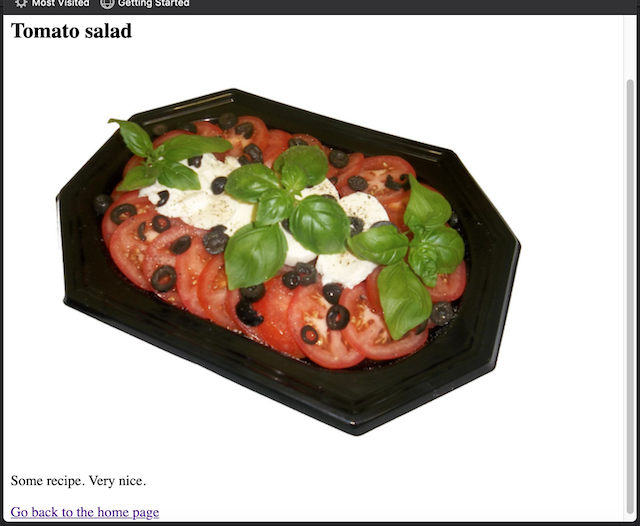 The recipe
Great! It’s not the most beautiful page in the world, but it does the job. We could flesh it out with extra HTML and CSS, but that’s not the scope of this tutorial.
Our usual word of caution! We are telling JSCause to print the contents of recipeContents directly. The <js= /js> syntax we use here (and also rt.print()) does its best to print it in a safe way. Having said that, it’s not generally a good idea to just print something that we received from the wild Internet directly in our application. That’s how bad actors (bad visitors) could potentially run malicious operations with your application. Always validate your user input, making sure that it contains only what you’re willing to display. Treat the security of your application seriously.
Congratulations! You now have a functional recipe management site.
Changing your site’s hostname
Your site will respond to requests that match the host name it was configured with. The default host name is localhost.
There might be settings in which you don’t need to change this. But in many circumstances, you’ll need to change it to your website’s name when hosting your site in a production server. For example, if your website is called example.com, you must replace the host name from localhost to example.com.
In order to do that, modify your site’s site.json file. It’s located inside the mysite directory, configuration subdirectory:
+ sites/
+ mysite/
+ configuration/
+ site.json
Open it and find the line with the hostname configuration:
"hostName": "localhost",
Replace "localhost" with "example.com":
"hostName": "example.com",
And done.
There is more in the documentation
We invite you to explore the rest of the documentation in order to learn more about JSCause. There are many other features that will make your web development life easier and more fun:
- Modules.
- Cookies.
- Other file operations.
- Redirecting to another location.
Explore the manual today!
The full Recipes example
The full Recipes example we built in this tutorial is available at Github:
https://github.com/eighthjouster/jscause_tutorial_recipes_example